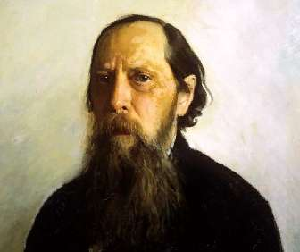

Борис Акунин
Мой календарь
Недавно организация «Настоящая Россия» проводила голосование: какое литературное произведение лучше всего объясняет суть «российскости». Победила повесть М. Е. Салтыкова-Щедрина (1826–1889) «История одного города».
Это один из самых близких мне авторов. Он родился 27 января, за что этому январскому дню поклон и благодарность.
Неслепая, взыскательная любовь к отечеству, которой проникнуты почти все книги писателя, многие принимали и принимают за русофобию, потому что Михаил Евграфович по шерстке Россию не гладит.
Сатирическая история печальной Родины у него начинается с вопля „Запорю!“ и заканчивается разрушением «города Глупова».
Печальна была и жизнь автора. Журнал «Отечественные записки», который Салтыков считал главным делом жизни, был закрыт властями. С горячо любимой женой у литератора были примерно такие же отношения, как с горячо любимой отчизной - госпожа Салтыкова называла сочинения мужа «Мишелевыми глупостями». Последняя недописанная книга «Забытые слова» была про слова, которые выветрились: «совесть», «отечество», «человечество». Внучку классика расстреляли на Бутовском полигоне в 1938 году.
«Зачем ты меня расстраиваешь, автор, хотя обещал своим календарем бодрить и утешать?» - спросите вы.
Так я как раз бодрю и утешаю. В город Глупов и после Салтыкова-Щедрина будут являться нелепые Фердыщенки и зверообразные Угрюм-Бурчеевы, но все они один за другим сгинут. А Михаил Евграфович останется.